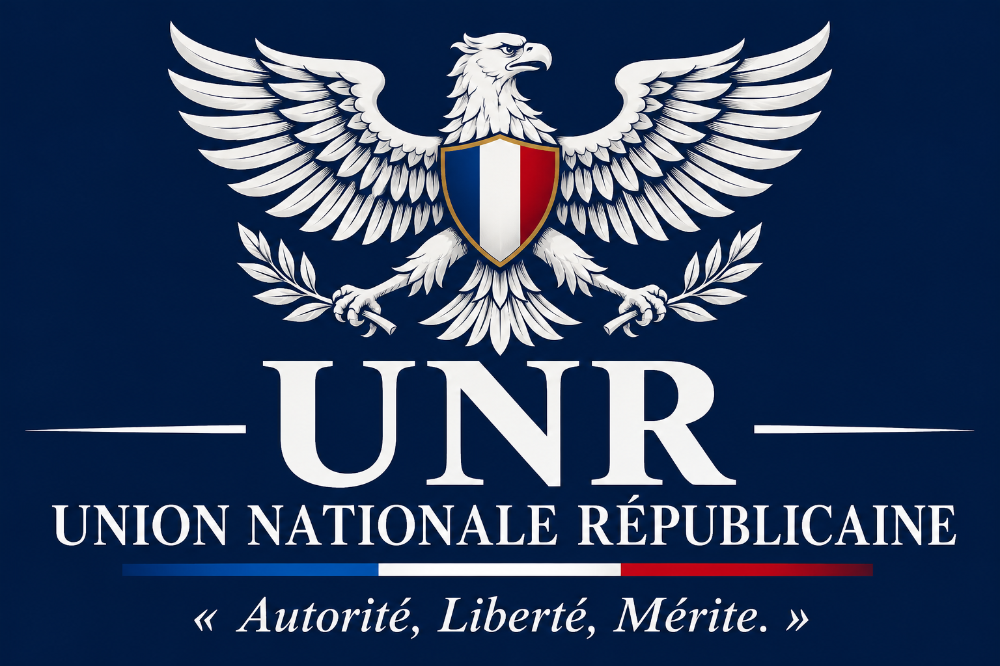

Des institutions respectées
Défendre l'égalité devant la loi, la laïcité, la continuité de l'État et le fonctionnement démocratique.
Un projet national-libéral qui entend associer souveraineté française, institutions républicaines solides, liberté économique, mérite et solidarité ciblée.
Découvrir les principes
L'initiative se situe dans la famille de la droite républicaine. Elle cherche à concilier un État solide dans ses missions essentielles avec une économie ouverte à l'initiative, à l'entreprise et à la responsabilité individuelle.
Défendre l'égalité devant la loi, la laïcité, la continuité de l'État et le fonctionnement démocratique.
Préserver la capacité de la France à décider de ses orientations politiques, diplomatiques, énergétiques et stratégiques.
Valoriser le travail, l'effort, les compétences, l'initiative et la responsabilité individuelle.
Le National-libéralisme défendu dans ce projet associe plusieurs traditions politiques. Il ne se réduit pas à une seule d'entre elles : ses principes doivent être conciliés et leurs éventuelles tensions débattues publiquement.
Les éléments ci-dessous reprennent les orientations déjà choisies pour le projet. Ils constituent une base de travail, pas encore un programme chiffré ou juridiquement expertisé.
Le projet privilégie un exécutif capable de fixer une direction claire, tout en souhaitant développer le recours au référendum et la participation citoyenne.
Les modalités de contrôle parlementaire, l'indépendance de la justice, les libertés publiques et l'équilibre des pouvoirs devront être précisés dans la doctrine définitive.
Le projet privilégie un État central garant de politiques nationales cohérentes, tout en conservant des collectivités territoriales. La répartition exacte des compétences reste à définir.
Le projet souhaite maintenir la coopération européenne, tout en limitant la centralisation et en préservant la souveraineté des États membres.
La politique étrangère devrait être déterminée par les intérêts français, avec des relations pragmatiques avec les grandes puissances et les partenaires internationaux.
Une orientation politique ne suffit pas à constituer un programme applicable. Chaque proposition devra être accompagnée d'une étude juridique, d'une estimation financière, d'un calendrier et d'une évaluation de ses effets sociaux et économiques.
Vérifier la compatibilité avec la Constitution, le droit européen, les libertés fondamentales et les engagements internationaux.
Chiffrer les baisses d'impôts, les dépenses nouvelles et les économies envisagées, sans présenter de financement fictif.
Publier les arguments favorables, les objections, les incertitudes et les éventuelles corrections des propositions.
Le cadre juridique des partis politiques et de leur financement doit être vérifié avant toute création formelle ou collecte de fonds. Les informations officielles sont disponibles auprès de la CNCCFP.
Cette page est une présentation d'un projet politique personnel en cours d'élaboration. Elle ne constitue pas une communication officielle d'une association déjà déclarée.